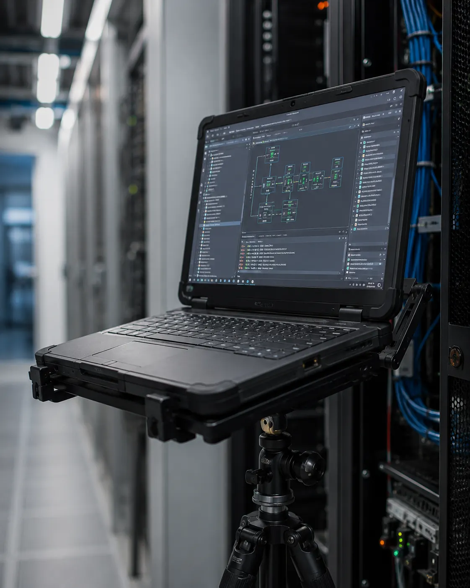

Insights · July 2, 2026
The Right Workstation for Every Engineering Role

"Field engineer" covers a lot of ground. A PLC programmer's setup looks nothing like a robotics commissioning crew's, and neither resembles what an instrument technician carries into a plant. The right workstation depends heavily on the role — here's how it breaks down.
PLC Programmers
A PLC programming workstation needs to sit close to the cabinet without touching it, at a height that doesn't force a crouch through a full debugging session. Magnetic mounting to the panel door is usually the fastest setup, since it keeps both hands free for terminal work while the screen stays exactly where you left it.
Automation Engineers
Across a rollout, automation engineer gear gets used differently depending on the day — some near cabinets, some on open floor between cells. A modular base that swaps between magnetic and tripod mounting covers both without carrying two separate stands.
Field Service Engineers
Field service engineer tools live in a van, not a workshop, which means size and weight matter as much as strength. A field service laptop setup that folds small enough for a door pocket gets used; one that needs its own case tends to get left behind.
Robotics Commissioning Teams
A robotics commissioning platform has to survive proximity to moving machinery — vibration resistance and a genuinely stable base matter more here than almost anywhere else on a plant floor.
Maintenance & Instrument Technicians
A maintenance technician laptop mount often needs to work in tight rack aisles where a tripod's footprint won't fit — a C-clamp onto the rack frame solves that. An instrument technician workstation has similar constraints: close-quarters access to calibration points, usually at odd angles a standard desk stand can't reach.
Control Systems Engineers
Control systems engineer tools tend to move between the control room and the floor multiple times a day — this is where a genuinely portable base earns its keep, since a stand that stays folded up half the time isn't doing its job.
Plant Commissioning & Industrial Programmers
During a full plant startup, plant commissioning gear gets used for entire twelve-hour shifts. An industrial programmer stand built for that duration needs an adjustable height range wide enough to go from seated to standing without repositioning the whole tripod.
One Platform, Every Role
The common thread across every role above isn't a different stand for each — it's the same modular base with the right mounting head attached. Buy for the base platform first, and the role-specific mount becomes a five-second swap instead of a separate purchase.
See how the Mr.Align workstation applies this in the field.
Explore the Workstation